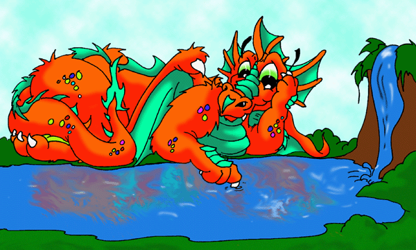

#3372 1 2005-06-18T20:23:32Z LoD This game is called "I am the king".
It's simple: The king chooses a method to elect the next king.
(It sounds stupid and I'm not sure if it will work, but I just wanted to host a messageboard game.)
I'll start (what a surprise):
I am the king.
The guy who replies first is the new king.
#76204 2 2005-06-18T20:28:43Z johnny_faneca then i am the king
if you wan to be king... uhhh.. don't post here anymore...
#76208 3 2005-06-18T20:33:23Z LoD this is stupid
then we would have over 700 kings and nobody knowing of his luck
#76209 4 2005-06-18T20:33:52Z brickman That was probably a bad example
I am the king. Whoever posts next with a screenshot of them having a "today's post count" number divisible by 5 is the next king.
edit: oh, when I opened this tab I would have been king.
#76210 5 2005-06-18T20:34:31Z Mark i think you just ruined the game JF.
edit - how do you find out today's post count?
#76273 6 2005-06-19T00:26:45Z Maniac Go
here.
Anyway,
I am the king.
The next king is the first person who knows off the top of their head what 69-2's level name is.
EDIT:
Don't assassinate me! Here's the screenshot:
Attachment (lost): post-6-1119140876.png
#76282 7 2005-06-19T01:48:52Z brickman Umm, thats a four, not a five.
#76310 8 2005-06-19T03:08:38Z TornadoTK A) You're looking at the Total Member Posts, look lower.

Holy crap, 455 in a -DAY-?!?! Jeez. Was that the spamnation thread?
C) Apoplexy
I am the king. The next person to post a picture of Charlie Murphy will be the king.
#76312 9 2005-06-19T03:12:41Z brickman Oh wait, nevermind. I meant that I wanted YOUR posts divisible by 5, but I see what I meant and I'll take that. I'll be clearer next time.
#76314 10 2005-06-19T03:19:06Z astro I am the king. The next person to post the name of the
creator of the Linux kernel gets it.
Attachment (lost): post-6-1119151146.gif
#76341 11 2005-06-19T05:56:46Z nevermore Linus Torvalds.
How fitting, eh?
Soy el rey.
The first person to derive the quadratic formula from ax^2 + bx + c is the king.
#76431 12 2005-06-19T14:03:50Z brickman x=(-b +or- (b^2-4ac))/2a
I am the king. Whoever posts next with a demo for "mount doom" which is not already on the map page is king.
#76513 13 2005-06-19T17:45:37Z Maniac Gimme a sec. I can beat it again.
#76516 14 2005-06-19T17:51:01Z LittleViking You didn't say it had to be a completion demo. There ya go.
The next king.. is.. wearing a hat. A real hat, in the real world. You don't have to prove it.
Attachment (lost): post-6-1119203461.txt
#76517 15 2005-06-19T17:55:41Z johnny_faneca i am wearing a Nike hat, now
The king is who posts the Chopin's tude op.10 n 12 ( mediap. file or something)
#76599 16 2005-06-20T04:42:15Z TornadoTK Less specific king stuff. Only put up something you can google with somewhat ease.

#76659 17 2005-06-20T11:32:07Z johnny_faneca lol
you can always by the CD or something

#76937 18 2005-06-21T03:17:32Z TornadoTK *Assaults the throne and takes over*
I am the king. I have killed your previous king for enforcing such preposterous laws on the kingdom. The next person to find a picture of Dave Chappelle costumed to be Lil' Jon will become the king.
#76969 19 2005-06-21T09:33:24Z johnny_faneca I am the King
the next person who posts a " love song " will be the king
Attachment (lost): post-6-1119346404.jpg
#76979 20 2005-06-21T10:44:18Z iangb Furoius Angels, by rob dougan
Also worth checking out on that site is the video for 'Clubbed to death'. See if you can spot where I got my sig pic from...
I am King, and Lord of All (I'm upgrading at the moment

)
The next person to tell me who said this: (hint - author) will be king.
Quote
Into every word I weave thorns
#77156 21 2005-06-22T01:11:44Z brickman A famous poet. Does that count?
#77162 22 2005-06-22T01:15:52Z Trogdor007 Yeah, I googled it in bartlett's... nothing... go brickman!
#77234 23 2005-06-22T08:47:19Z iangb Nope, you are all wrong.
The answer you were looking for was Steve Aylett.
Wow. Look at all the funky quotes!
I am still the funky king. Thankyou verra much.
The next king will be the person who trys to type the alphabet backwards... with their eyes shut.
#77236 24 2005-06-22T08:59:51Z johnny_faneca ZYXWVUTSRQPONMLKJIHGFEDCBA
I am th king!
The next king is who finds a Shakespear poem and posts it here
#77276 25 2005-06-22T15:00:17Z Trogdor007 FROM fairest creatures we desire increase,
That thereby beauty's rose might never die,
But as the riper should by time decease,
His tender heir might bear his memory:
But thou, contracted to thine own bright eyes,
Feed'st thy light'st flame with self-substantial fuel,
Making a famine where abundance lies,
Thyself thy foe, to thy sweet self too cruel.
Thou that art now the world's fresh ornament
And only herald to the gaudy spring,
Within thine own bud buriest thy content
And, tender churl, makest waste in niggarding.
Pity the world, or else this glutton be,
To eat the world's due, by the grave and thee.
I am the King!
The person who can post a NEW completion demo of Mother thwumping impossible will be the king!
And, JF..., It's SHAKESPEARE!
#77295 26 2005-06-22T16:28:05Z johnny_faneca *i hate you*
I am the King!!!!!!
The king is who posts a pic. of his mother ( i deserve this!

)
Attachment (lost): post-6-1119457776.txt
#77314 27 2005-06-22T17:24:09Z LittleViking Woot, I am the King.
Next person to change their avatar and post about it here gets to be king.
Attachment (lost): post-6-1119461049.jpg
#77317 28 2005-06-22T17:42:14Z Trogdor007 I changed my signature!
#77329 29 2005-06-22T17:56:21Z LittleViking Congratulations, I hope that works out for ya, YOU ARE NOT THE KING.
...
*cough*
Anyways...
#77380 30 2005-06-22T19:30:40Z brickman I finally switched back (but the link's in storage, don't worry)
I am the king. The next person who posts the name of the all the levels in the first chapter of duke nukem 3D (aka the part that was free) is king. That includes the secret level.
#77470 31 2005-06-22T22:39:11Z Maniac Crud. We peasants know not of this kingly game.

#77536 32 2005-06-23T01:55:57Z brickman Trust me Maniac, you're better off not searching for it. It featured generic and by now outdated FPSing combined with inappropriate images purely for the sake of causing controversy (imagine naked women trapped in giant green pods in almost every level.
#84525 33 2005-07-19T01:51:56Z brickman I am still the king and semi-reviving this game. The next person to post without commenting on the fact that I'm reviving it is the new king.
#84530 34 2005-07-19T02:05:27Z Maniac I am the king. The first person to join
Web Riddler and get to Phase 5 is the new king.
#84537 35 2005-07-19T02:18:21Z LittleViking omgz necromancer. ...Er. I've alreay joined WebRiddler and gotten to Phase 5. Am I king?
First person to tell me whether I'm king or not gets to be the new king.
#84542 36 2005-07-19T02:34:20Z S-Mies You are not the king, I am.
The next person to write an N haiku is the king.
#84548 37 2005-07-19T02:56:51Z brickman N is for ninja
Ninjas like to steal from drones
Ninjas live short lives
I am the king. The next person to find and post what I used to refer to as "the scary clown" is king (hint: its a smilie, and its from quite a long time ago, but there's at least one person I can think of who should be able to do this).
#84606 38 2005-07-19T09:35:53Z iangb Ahhhh!!! It's teh scary clown!!!!111!!1
<---
----
That makes me king.
The next person who can tell me which game inspired the N level ctf_death is the king
#84613 39 2005-07-19T09:57:10Z Maniac No, the scary clown is this one.
But, sure, Soldat inspired ctf_death.
I am the king on two counts. The first person to post a good quote of me is the next king.
Attachment (lost): post-6-1121767030.gif
#84615 40 2005-07-19T10:03:38Z LittleViking I am the king on two counts.
I am the king.
The first person to corredt my spelling error becomes king.
#84617 41 2005-07-19T10:04:01Z iangb Quote: maniac @ top of this page
Crud
Is that good enough, your majesty??
And because of LV beating me to it...
The first person to correct my spelling error becomes king.
I am the king!
The first person to name he home of the crab of ineffable wisdom is the next king.
#84618 42 2005-07-19T10:05:22Z Maniac I am the peasant who wasn't fast enough to become the king. I am also the peasant who has never heard of the Crab of Infinite Wisdom, and as such won't get the question right on time.
#84619 43 2005-07-19T10:08:01Z Maniac Yah, I edit my last posted.
#84621 44 2005-07-19T10:10:40Z iangb As did I.
Anyways. Currently I am King.
My successor has to name the home of the crab of ineffable wisdom.
#84625 45 2005-07-19T10:12:29Z Maniac Ah, not the crab of Infinite wisdom, but the crab of Ineffable wisdom?
#84626 46 2005-07-19T10:21:29Z iangb Oh, gawds.
No, the crab of ineffable wisdom.
*hides head in shame*
#84629 47 2005-07-19T10:33:48Z Maniac Crab of Ineffable Wisdom
I am the king. The seventh person to grovel before me is the new king.
#84635 48 2005-07-19T12:20:11Z Red Reamer Thats stupid.
*grovels*
Sif six other people are gonna do that.
#84636 49 2005-07-19T12:49:55Z S-Mies *grovel*
Since I have a multiple personality disorder, I am to be considered several (9 or more) people. Therefore, I was the seventh person to grovel. I am the king.
The next person to name two finnish beers by name shall be the king^^
#84641 50 2005-07-19T14:38:43Z blue_tetris Finlandia III and Olvi Silver. Of course, you can always opt for the classic Sahti, instead.
Man, am I a drunk. More importantly, however, I am the king.
The next person to post the titles of five campaign settings for Dungeons & Dragons gets to have my crown.
#84660 51 2005-07-19T16:08:50Z TornadoTK Forgotten Realms, Dragonlance, Eberron, Dark Sun, and Greyhawk. This is what happens when you know a group of D&D'ers. Why do I know them..
I am the king. The next person to post an "Avril Lavigne Sucks" picture will become the king.
#84685 52 2005-07-19T18:49:25Z LittleViking I am king.
First person to tell me who wrote this short story is new king: "For Sale: Baby Shoes, never worn."
Attachment (lost): post-6-1121798965.png
#84761 53 2005-07-20T01:38:12Z S-Mies Ernest Hemingway, of course. I am the king, but you can call me Elvis.
The next person to count their fingers three times and not get the same number twice shall be king.
PS. blue_tetris, the beers you mentioned either are exported so far away from Finland that I've never heard of them or then they just don't exist at all...

I do trust you on this one of course. Finlandia Vodka is (hopefully) a world-famous beverage, and Olvi is among the finest breweries around here, but I seem to have completely missed Finlandia beer and Olvi Silver.

(And BTW bonus points for the "III" ^^)
#84794 54 2005-07-20T04:53:53Z TornadoTK 5 and 4. I hid one the second time.
I am the Queen's Baby Daddy. The next person to post an upside-down picture of 46-0 will become the Queen's new Baby Daddy.
#86096 55 2005-07-25T22:42:52Z Trogdor007 I am the king!
the first person to join web riddler 2, and beat phase four is the next king!
you need to do both! (not you, maniac!)
Attachment (lost): post-6-1122331372.png
#86773 56 2005-07-29T03:19:03Z Trogdor007 c'mon guys!
#86804 57 2005-07-29T09:05:13Z astro I steal Trogdor007's crown, and now I'm king. The next person to praise my signature will be king.
#86812 58 2005-07-29T10:13:40Z Red Reamer I like ponies. They are teh tasty

I am the king, the next person to rate my newest map (a five

) is the new king.
#86828 59 2005-07-29T10:58:27Z Andrelius Hahaha, that's just evil
.
No, I'm not the king.
#86831 60 2005-07-29T11:25:58Z Trogdor007 You stole it?
That's just cheap!
#86856 61 2005-07-29T12:15:59Z astro You got
Attachment (lost): post-6-1122639359.jpg
#87152 62 2005-07-30T16:37:50Z Guest *Rates Red Reamers new map a five... DECIMAL FIVE, THAT IS! HAH!*
Just kidding, I ain't that mean.
I am the king. The next person to post a picture of the Avalaunch logo will become the king, and I will work at Burger King.
#87175 63 2005-07-30T19:11:53Z Trogdor007 
I am the King!
The next person to join roundabouts of resistance and then recruit two more for it will be king!
#87176 64 2005-07-30T19:46:48Z brickman I am holding a military coup to overtrow the unjust king Trogodor and his unjust and uncalled for laws. For now, I am leader of the temporary millitary government.
The new king will be the next person to post an "pwned"/"owned" picture that I have not seen yet (I need to verify).
#87191 65 2005-07-30T22:58:47Z TornadoTK You've never seen this. I just made it. I am the king. The next person to tell me a 15-Letter Word that starts with C will be the next king.
Attachment (lost): post-6-1122764339.png
#87195 66 2005-07-31T00:03:03Z Lucidium Cacohydrophobia, the fear of sewer water.
Apparently.
I am the king.
The next person to make a
paper water bomb / cube, and take a photo of it with the metanet forums on their screen in the background (to prove you did it) is king.
Sorry if it's a bit of a hassle, but hey, I happened to have just made one, and my imagination's broke.
[edit]Added a link to instructions.[/edit]
#87197 67 2005-07-31T00:06:20Z glenno14 Is constellationed a word?
EDIT: lucidium beat me to it.
#87214 68 2005-07-31T01:22:56Z Maniac O king of mine, Where art the best place to buy square paper?
#87218 69 2005-07-31T01:58:23Z Lucidium Square paper commonly comes with 30% extra, completely free! Also known as A4, this convenient double pack provides everyone's favourite "square" paper, along with a useful extra strip!
#87931 70 2005-08-03T14:53:40Z Lucidium Too much bother?
Ok, whoever posts next is the king.
#87946 71 2005-08-03T15:33:04Z glenno14 I am the King! cool....
The first person to type "Hjopppppppppjheecbefvfds" is the King
#88017 72 2005-08-03T19:12:38Z brickman Hjopppppppppjheecbefvfds
I am the king. The next person to post a "pwned" SMILIE is the new king.
#88080 73 2005-08-03T22:34:54Z Red Reamer 
I guess I'm the king!
Next person to tell me what the name of the wooden ventriloquist dummy from the Simpsons is called will be the new king.
#88082 74 2005-08-03T22:38:50Z LittleViking The Great Gabbo. Didn't even have to look it up.
I am king. Next person to post a picture of a Sharpie marker is king.
#88190 75 2005-08-04T10:19:36Z Daddaluma I am king!
The next person to post the way to get megaman to be able to perform Ken and Ryu's hadouken is the new king.
#88337 76 2005-08-04T20:14:33Z brickman Hack the code!
I am the king, I guess. The next person to post a necromancer smilie is the new king.
#88394 77 2005-08-04T22:37:27Z Red Reamer This is apparently a necromancer smilie.

Interestingly, when you search on google, you get this!

I am the king, next person to quote the lyrics from a Porcupine Tree song is the new king.
#88441 78 2005-08-05T00:56:12Z Bigblargh Jupiter Island is full of pleasures
Glowing gardens holding hidden treasures
Luminous flowers of yellows and greens
Glittering petals that have to be seen
Here's your chance don't let it pass you by
Take my hand and we'll fly
I am teh king. The first person to transcribe a chips brand name into l33t is king.
#88442 79 2005-08-05T00:59:45Z Maniac |****|\|71u|v|
I am the king. The first person to make me a crown is the new king.
#88443 80 2005-08-05T01:04:51Z Bigblargh |\/|\/|\/|\/|\/|
Curl that up and put it on your head.
The first to describe the smell of a salmon is king.
#88446 81 2005-08-05T01:15:57Z brickman Bad, like rotting meat. . . or maybe I left this one out too long. . .
I am the king. The next person to post a useful new pose for possible use in my comic is king (and by new I mean make a new one).
#88447 82 2005-08-05T01:17:22Z Maniac Salmon (least, dead salmon that you eat), smells kinda salty, and also in that fishy smell that can't be really described using other smells. Maybe it smells a tad meaty, I dunno.
I am the king. I think. The next person to post a link to one of my puzzle maps is the new king.
#88457 83 2005-08-05T01:58:26Z Trogdor007 ummm...
is brickman or maniac King?
#88471 84 2005-08-05T04:13:19Z LittleViking Brickman posted first, he is king.
Edit:

But now I am king. Bwahaha. Find me cheap RAM and you're the next king.
#88475 85 2005-08-05T04:48:09Z Bigblargh EBAY!
The first to answer this question first is king:
According to
www.uncyclopedia.org, who is the inventor of the internet?
#88488 86 2005-08-05T06:39:27Z Red Reamer Quote: uncyclopedia
Supposedly invented by Al Gore, the internet
Yay. I are the king.
The first person to post a picture of tubgirl will most probably be banned.
The first person to offer to buy Timesplitters Three off me will be the new king.
#88491 87 2005-08-05T06:48:48Z LittleViking Dude, I'll totally give you $3 US for your copy of Timesplitters 3. PM me if you're interested.
I am king. First person to post the lyrics of their favorite song is the new king.
#88508 88 2005-08-05T08:46:33Z Meteor Quote
Gatesy: Nineteen ninety four,
We were narrowly missed by a great big meteor,
Didn't really make front page news.
We're too busy cooking crumpets,
And wearing out shoes.
Yon: Wearing out shoes.
Gatesy: So my mind starts thinkin' 'bout the possibility,
Tripod: What's a cloudy blue rock in relation to a galaxy?
Gatesy: Like a snail on the footpath, you haven't got a chance,
If you're in the way, you're in the way,
All you can do is check your pants,
Yon: Check your pants.
Scod: Check your pants.
Gatesy: Or you sing about it.
Yon: Meteor.
Gatesy and Scod: Meteor.
Yon: Meteor, what a mighty big...
Tripod: ... slap in the face.
Yon: Are you sure?
Gatesy and Scod: Meteor?
Yon: Meteor?
'Cause you know, we're rather fond of this place.
Gatesy: Everybody wants to save the world,
Get to the stage when the spiritual age has the questions answered.
Find another energy source,
Or maybe live under the sea, become one planet celebrating humanity,
You wouldn't read about it.
Yon: Meteor.
Gatesy and Scod: Meteor.
Yon: Meteor, what a mighty big...
Tripod: ... slap in the face.
Yon: Are you sure?
Gatesy and Scod: Meteor?
Yon: Meteor?
'Cause you know, we're rather fond of this place.
Gatesy: So many things I haven't done,
Ears ring procrastination,
Yon and Scod: "Hello." "How are you?" "Not bad, yourself?"
Gatesy: I see the sky light up,
A beautiful reverberation.
Yon and Scod: "How 'bout this weather?" "It's something else."
Gatesy: Look towards my circle of loved ones,
See a defeated face,
Close our eyes and hold our breath,
And realise we're fond of this place.
Yon: Meteor, meteor.
What a mighty big...
Tripod: ... slap in the face.
Gatesy and Scod: Are you sure?
Yon: Are you sure?
Gatesy and Scod: Meteor?
Yon: Meteor?
'Cause you know, we're rather...
Tripod: Fond of this place.
This place...
This place...
This place...
I am king.
First person to post something nonsensical involvind plankton will be king.
#88509 89 2005-08-05T09:52:01Z Jesse So like this one time I was swimming in the ocean, and I dove down so far that there was a giant plankton and he stole my watch. But I got him my revenge, I fed him to a whale. And that's wats wrong with the government.
I am the king. The next person to autograph my spongebob and patrick picture will be king.
#88572 90 2005-08-05T14:43:28Z astro Done. The first person to tell me why chipmunks should be banned will be king.
Attachment (lost): post-6-1123253009.png
#88608 91 2005-08-05T17:05:57Z Red Reamer Cause McChipmunk Burgers taste really awful.

The next person to Watch and be disgusted at the first item in the new Ebaumsworld update (and post their revolution here) is the new king
#88670 92 2005-08-05T22:53:42Z Bigblargh Ebaumsworld's "Snot Rocket" disgusts me because it goes against all my right-winged cristian values.
Okay, whoever double posts next is TEH KIGN!!1!
#88671 93 2005-08-05T22:56:23Z glenno14 I am the king
First person to post a screenshot of the sims is the king.
#88673 94 2005-08-05T23:06:24Z Bigblargh But you didn't double post
#88675 95 2005-08-05T23:12:40Z glenno14 oh
#88676 96 2005-08-05T23:13:08Z glenno14 ok
First person to post a screenshot of the sims is the king.
#88750 97 2005-08-06T14:40:15Z Mark Sims doing what sims do best
There. follow the link, and voila!
I am the king!
The next person to write me a short story on how amazing and kingly I am and post it on this forum is the king! The story must have a beginning, a middle and a twist before the end!
Edit: i thought i wouldn't waste space by actually putting the whole picture on here. How kind am i? (include how kind i am in the story)
#88761 98 2005-08-06T15:17:27Z brickman Mark is our king. He was a very good king. He didn't waste space, and he never falmed. However, one day a bad person came to the kingdom and tried to usurp the throne. All the guards tried to catch him, but none succeeded. But when all looked bleak, the elite guard Brickman captured him. But, in a shocking twist, Brickman then usurped the king himself!
So now I am the king. The next person to post a new pwned image that hasn't been used on the forums yet is king (I know I did it already, but there's no such thing as too many pwned pictures).
#88819 99 2005-08-06T21:45:00Z Echarin 
The next person to write 20 words or more about who are better, ninjas or pirates, will be the king.
#88822 100 2005-08-06T21:59:12Z brickman Ninjas are much cooler than pirates. Pirates get to have boats, but ninjas get stealth and sweet swords. Go ninjas!
I am king. Next person to post a screenshot of them finishing first in any multiplayer game I've heard of is king.
#88943 101 2005-08-07T10:56:25Z Maniac I hope you've seen Blackhawk's sig, because this came from that game. Does tied for first count?
I am the king, I think. I seek Brickman's approval before continuing in my kingly actions.
Attachment (lost): post-6-1123412185.png
#88959 102 2005-08-07T14:05:23Z brickman Sure, that counts, as long as you tell me what the name of that game is since it doesn't say.
#88962 103 2005-08-07T14:07:38Z Maniac Domain Knights v. 3. Sorry, I should have included that in the original. There's a topic up in Other Games if you'd like to try it.
Aanyway, am I the king now?
#88966 104 2005-08-07T14:14:29Z brickman As I said, that counts. To be honest though I was expecting a screenshot of the end of a round with "player stats" like in an fps or soldat, but I suppose I wasn't that specific so its my fault.
#88970 105 2005-08-07T14:30:30Z Maniac Fair enough.
I am the king. For certain this time.
The first person to post how to cheat at Minesweeper is the new king. And yes, I know how.
#88973 106 2005-08-07T14:33:53Z brickman You can cheat?
#88978 107 2005-08-07T14:40:55Z Maniac #88979 108 2005-08-07T14:48:14Z Echarin Quote
Reveal Mines
With your cursor inside the minesweeper window type "XYZZY" then press Shift-Enter and Enter. A white dot should appear in the upper-left corner of the screen. If it turns black, your cursor is resting on a mine.
I am the king. The next person to post a picture of him/her -self looking really angry is the king.
#88980 109 2005-08-07T14:54:40Z Maniac
Err... no pictures from me. Even if I wanted to, I don't have my own camera.
#89025 110 2005-08-07T17:59:23Z Bigblargh TEH PH33R!
Next person to post a sound file of pants being played as an instument is king.
Attachment (lost): post-6-1123437563.jpg
#89029 111 2005-08-07T18:04:03Z brickman Umm, what? You mind rephrasing* that?
*replacing it with something logical
#89049 112 2005-08-07T18:57:31Z Bigblargh I thought it was a good idea...
First person to name a Egyptian God card from Yu-Gi-Oh! is king.
#89057 113 2005-08-07T19:46:28Z Ryuk Looking up on google...
Silfer the Sky Dragon
Obelisk the Tormentor
The Winged Dragon of Ra
Next person to post a picture of someone's whole body from this site is the next king.
#89062 114 2005-08-07T19:57:22Z Maniac I am the king. I have usurped the previous king for his ridiculous election processes, plus the fact that I hold a grudge against him.
The second person to post after me is the next king.
#89064 115 2005-08-07T20:05:06Z brickman Maniac, how hard is it to go into the old "post a pictire" thread?
#89066 116 2005-08-07T20:06:55Z Brickiac I am the king. The next person to post a screenshot of an exceedingly crappy game is king. You do not have to own it, any shot off the net will do, but the game MUST be garbage.
#89068 117 2005-08-07T20:10:41Z Ryuk Pong?

#89069 118 2005-08-07T20:12:21Z brickman No, it may not meet today's standards but pong was great in its day. I'm asking for something that was pure garbage at the time it came out, or else even some classics could be thrown in.
#89079 119 2005-08-07T20:47:14Z Ryuk 
?
#89080 120 2005-08-07T20:48:15Z glenno14 heeeey! I like Q-bert! I was heart broken when it broke!
#89085 121 2005-08-07T21:08:22Z brickman Umm, yeah, I'm pretty sure Qbert was popular too. Try something thats crappy made recently, since if its crappy now it was crappy a month ago.
#89319 122 2005-08-08T22:02:37Z Eli I assure you that this game IS garbage:

I am the king. The next king will be determined by majority vote; s/he will be the person who the greatest number of
actual members have voted for in the 10 posts following this one, not counting posts that come immediately after another post by the same person. In the event of a tie, the 11th poster will be king.
#89325 123 2005-08-08T22:15:31Z Maniac Wow, it's ELI!
I vote for Brickiac to be the king.
#89326 124 2005-08-08T22:16:20Z Manickman Me too. I believe Brickiac to be very qualified to be our supreme master.
#89328 125 2005-08-08T22:17:10Z Brickiac Aww, thanks guys. You're sweet.

#89331 126 2005-08-08T22:22:07Z LittleViking I vote Red Reamer.
#89336 127 2005-08-08T22:33:19Z jak25 i vote sgt.poptarts
#89361 128 2005-08-08T23:48:38Z brickman I vote Brickiac, because technically thats my half of the fusion accounts.
#89417 129 2005-08-09T06:08:03Z Red Reamer They're cheating!
Quote
I vote Red Reamer.
Oook. Thanks
#89428 130 2005-08-09T07:09:58Z LittleViking I think the italicized "actual members" part was to keep votes from people like Maniackman from counting. If you ask me, the official count is Brickiac: 2, Red Reamer: 1, sgt. poptarts: 1. And it didn't say 10 votes either, it said 10 posts; so this is number 8. Two more and we crown a new king.
#89432 131 2005-08-09T07:16:54Z astro I vote Red Reamer.
#89482 132 2005-08-09T13:45:11Z brickman I declare a tie!
#89488 133 2005-08-09T14:57:09Z Maniac Should I just make Brickiamer now?
#89523 134 2005-08-09T17:25:53Z Eli Should I just make Brickiamer now?
uh, Maniac? Whether or not you intended it, you're king now.
#89524 135 2005-08-09T17:30:12Z Trogdor007 That was so rigged.
I steal the crown from maniac.
I am the king. The next person to help me make my sig in the photoshop thread will be king.
#89575 136 2005-08-09T23:21:29Z Red Reamer Well I already offered my help and so did Sweep. That was a pretty poor way of getting attention Trogdor.
#89613 137 2005-08-10T02:37:36Z Trogdor007 I believe that makes you, RR, the king
#89641 138 2005-08-10T06:46:57Z Red Reamer Looks like you made your sig, ugly and huge though it may be
I am told that I have kingly duties.
The next person to give me their credit card number will be king.
Hahaha. Just kidding, the next person to tell me who the last three unlockable characters in
Lego Star Wars ™ will be the new king.
#89679 139 2005-08-10T13:32:44Z brickman Whoa, that sig DOES look bad. And the necromancer text is impossible to read. . . take it out before future people think I stole images from people's sigs.
#89690 140 2005-08-10T15:20:20Z Trogdor007 jeez... Sorry
. I thought it looked cool. whoa! I forgot to take out the previous one!
#89983 141 2005-08-11T17:29:45Z glenno14 Just a guess....
Darth Sidious
Rebel Trooper
Princess Leia
I dont think im right though.
#90003 142 2005-08-11T19:10:15Z Bigblargh I think there are four unlocakables.
Darth Vader
Stormtrooper
Princess Leia
Rebel
Or at least that's what the website said. And you can't lie on the internet, right?
I am king. First to post the first word of the story "Da Vinci Code"
Wins a fish
And becomes king.
#90060 143 2005-08-11T22:39:52Z glenno14 read what he said. he said the last 3 unlockable characters.
#90066 144 2005-08-11T23:20:16Z Red Reamer Well seeing as they all come at once. I think. The rebel trooper might be earlier, but I think it is actually 4. Sorry all! Now i just need to find the Da Vince Code....
#90152 145 2005-08-12T12:57:00Z Starcrossed NOOOOOOOOOOOOOO! My mum borrowed it, but just gave it back!
NOOOOOOOOOOOOOOOOOOOOO!
#90383 146 2005-08-13T01:51:20Z Ryuk Part. For part 1: The Da Vinci Deception
Or
avast
I'm pretty sure I'm the king. If not, tell me otherwise.
First one to say what this
link does is the king.
#90388 147 2005-08-13T02:02:29Z Maniac It eats your brain.
The first person to make me a mosaic with my name on it is the king.
#90393 148 2005-08-13T02:11:51Z Ryuk Give me a second, I just have to fill the gold in. BTW, mosaic is with small pieces?
I have had to do a bunch of laundry, I'll be done soon, hopefully.
#90405 149 2005-08-13T03:25:19Z Ryuk How's this? I made it and I mean it!
Attachment (lost): post-6-1123903519.pdf
#90413 150 2005-08-13T03:44:44Z nevermore Alright, post criteria for the next king.
#90430 151 2005-08-13T04:12:19Z Ryuk Let me think.
Next person to post what show and game Broly is from is the next king.
#90439 152 2005-08-13T04:31:42Z Jesse He's from Dragon Ball Z (One of the movies I think) and he's also in Budokai 3
I am the King. The next person to post a photo of their old NES or SNES will be king
#90440 153 2005-08-13T04:32:14Z LittleViking Dragon Ball. Z or GT or some such.
First person to do a google search for "spork king" is the new king.
#90441 154 2005-08-13T04:34:58Z Ryuk Does an emulator count?
Attachment (lost): post-6-1123907698.pdf
#90443 155 2005-08-13T04:36:51Z astro I choose to worship LV as my one true King. As I searched for spork king, I am the new king. The next person to send me an email (maestro@gmail.com) will be king.
(spam me if you dare.)
#90461 156 2005-08-13T04:59:15Z Sgt. Poptarts i am the king (i hope)
the next person to tell me every game they have ever owned shall have assassinated me and became the king.
#90464 157 2005-08-13T05:07:09Z astro What did you do to become the king?
#90466 158 2005-08-13T05:08:10Z Sgt. Poptarts crap. i knew that what i clicked wouldnt work.
#90468 159 2005-08-13T05:18:13Z Ryuk Think that worked.
Next one to tell me what this means is the new king:
OJOKB
#90565 160 2005-08-13T14:50:17Z brickman OJ Obviously Killed B_____? (I don't know what his wife's name was, but I'll assume it starts with a
#90614 161 2005-08-13T17:54:23Z Bigblargh OJOKB in the context of:
QFSTPOBHHJP QVPl QPNQBSF J TVPJ $MJDIT 4F VO OJOKB TJ USPWB GBDDJB B GBDDJB DPO.
I dunno, I found it on Google. Does it count?
#90684 162 2005-08-13T21:45:19Z Ryuk Nope, both wrong. It is a riddle. Try taking a step back. *hinthintcoughcough*
#90686 163 2005-08-13T21:54:53Z Bigblargh Often jam oreos know bacon

#90687 164 2005-08-13T22:01:24Z Ryuk I'm just going to say again, "Take a step BACK!!!"
Oh, yeah and check out
I am the queen! (of the levels) Attachment (lost): post-6-1123970484.txt
#90690 165 2005-08-13T22:07:19Z LittleViking Oh, WebRiddler. It means ninja.
I am king. Post your processor speed to become the new king.
#90706 166 2005-08-13T22:45:17Z Ryuk How?
#90708 167 2005-08-13T22:52:38Z Maniac 1.25 Ghz. Oh yeah.
I am the king. The next person to post a memorable quote by me is the next king.
#90712 168 2005-08-13T23:00:15Z Ryuk Go paper mach wireless fish!
How's that?
#90859 169 2005-08-14T13:51:21Z glenno14 1.25 Ghz. Oh yeah.
What a memorable quote......
next person to post a link of the latest ctrl+alt+del comic is the king.
#90936 170 2005-08-14T17:37:43Z LittleViking #90940 171 2005-08-14T17:46:33Z glenno14 Im still the king......hooray!
Anyway since Maniacs quote was so memorable, I put it in my sig! Hooray!
#91020 172 2005-08-14T21:14:32Z Bigblargh I am king. The next person to post a picture of their shoe listening to headphones is king.
Attachment (lost): post-6-1124054072.jpg
#91202 173 2005-08-15T05:15:47Z nevermore Laughs at LV's post.
It helps that "Bunny"'s really cool.
#91842 174 2005-08-17T06:48:53Z Red Reamer Right I did this in five minutes in the interest of keeping this alive.

Next person to tell me how much sugar is in a can of soft drink (specify which one) is the new King.
#91857 175 2005-08-17T07:16:14Z LittleViking A 12 oz. can of Coca-Cola has 39 grams of sugar.
I am king. Next person to post what time it is becomes king.
#91859 176 2005-08-17T07:25:16Z astro 4:46PM, Australian Central Standard Time.
The next person to post a valid reason why Macs are better than PCs will be king.
#91870 177 2005-08-17T07:54:43Z Daddaluma looks like the game's over folks . . .
#91886 178 2005-08-17T09:15:44Z Atilla Macs are better than PCs because when they become obsolete (ie. two minutes after you buy them) they make a more asthetically pleasing paperweight than a huge beige box.
I am the one, true king! All must cower before my might! The nations of the world tremble before me! BWAhahahahahaaaaa!
The first person to post the complete lyrics of "Can't Wait to be King", as featured in Disney's The Lion King will one day rule over everything the sunlight touches.
#93187 179 2005-08-22T14:14:50Z Eli ...will one day rule over everything the sunlight touches.
*raises staff* He who has read
So You Want To Be A Wizard? should be able to infer what's about to happen.
#93188 180 2005-08-22T14:21:52Z Maniac OMFGZ!!111oneone!!11!! A POST FROM TEH ELI!111!!11oneoneoneonetwo
[/n00b]
Ahem. Wow, it's been a while
#93195 181 2005-08-22T14:46:56Z brickman I am the usurper. The next person to post a link to a good freeware game that hasn't been mentioned yet on this site is king.
#93365 182 2005-08-22T23:16:48Z glenno14 Jailbreak
I dont think its been mentioned on the site....I like this game. pretty short though.
I am the King.....next person to post a picture of the game instruction manual for the snes game "young merlin" is the king.
#93418 183 2005-08-23T04:54:15Z Bigblargh freakin *grumble* *grumble* obscure *grumble* mcmuffins *grumble* glenno14 *grumble* *grumble*
#93422 184 2005-08-23T05:11:49Z LittleViking 
I am king. Post in haiku to take my place.
#93423 185 2005-08-23T05:18:23Z Bigblargh I am yet another king.
First person to rant about crappy webcomics
will be the next king.
#93426 186 2005-08-23T05:37:43Z LittleViking It's 5, 7, 5 syllables, bigblargh, not words. You are not the true king yet.
#93427 187 2005-08-23T05:37:58Z Teedle
I am king. Post in haiku to take my place.
I'm sorry, but I have to.....
Haiku poems are
so very short they can't get
a single point a-
(Yes, I know I'm not King, but I had to.
)
#93435 188 2005-08-23T07:21:38Z Jesse Once upon a time
There lived a small boy named Joe
He died the next year.
lol a bit morbid but whatever.
I am the king. The next person to post a picture of my favourite car will be the next king.
Hint: It starts with C, and rhymes with Schmevrolet Schtingray
#93438 189 2005-08-23T07:36:04Z nevermore 
I'm king. The next person to type in all caps is not the king, because that's annoying.
The next person to write me a short but hilarious script about anything is the king.
#93447 190 2005-08-23T08:35:33Z Red Reamer How short is short?
Starry backround.
[Voice-over dude]: Suppose for a moment you are in a realm where rules are not abided, and daily happenings are irregular at best. Pretend I have a personality, and do not resemble an automated, though clothed robot. Then you will have truly entered... The Skylight Zone.
Ominous music plays.
[Voice-over dude]: Here we see an ordinary street in an ordinary neighbourhood, but this morning is far from ordinary.
Postman flees across screen, followed by a bear. Sounds of a savage mauling ensue.
[Voice-over dude]: Achem... Well it appears I was a bit late for that one...
Breaks off, gargling and strange beeping noises.
[Voice-over dude]: I was born without a personality!
Voice-over dude does a fairly terrible rendition of the robot.
Cut to Technical difficulties screen involving a picture of a mechanic with a screwdriver up Voice-over dude's ass.
End
I think it would work better in graphic form. Am I King?
#93464 191 2005-08-23T11:06:25Z Atilla [whinge]I can't believe noone bothered to answer mine. What lazy slobs. It took me one minute to find the lyrics using - yes! - a 28k dial-up connection. Grumble grumble grumble....[/whinge]
In any event, I will now write a short but outrageously insane story for nevermore.
Once upon a time there was a fair kindom called Forumland, where ASCII characters could roam gloriously free. But the kingdom's neighbours looked upon it with envy, and plotted to seize it. And so it came to be that Forumland was overrun by the endless legions of badgrama. The poor little characters where brutally forced into positions they were never ment to hold. They were worked so hard that numbers had to do the work of letters. The evil kingdoms particularly hated punctuation - it was banned from consorting with the common people of badgrama, and contorted into strange and terrible shapes by the dark council that ruled it - known only as 't3h |337'. But all was not lost. When the forums languished under the heel of the tyrant and the Server itself cryed out for justice, there arose a force of stolid morals and excellent spelling. Known as 'The Grammar Nazis', these warriors of mighty intelligence banished the vile and unholy forces of t3h |33t with a mighty technique passed from administrator to administrator from the dawn of time - the mystic blow known as "The IP Ban Fist". And lo! the Grammar Nazis rode against the unrighteous legions of illiteracy, and drove them from the forums, and there was much rejoicing.
I am probably not the king, since RR beat me to it (curses). Therefore, the next person to head their post with "All Hail the Most Exalted Atilla, the One, True King" will be named my domestic servant, rather than the heir to the throne.
#93481 192 2005-08-23T12:23:43Z Red Reamer That was good, but notice he said script. I have had it verified by LV that mine was at least mildly funny, so I now proclaim myself king.
Next person to beat my
Impossbily Hard Challenge will be king.
Just kidding, next person to dial a random number (a real number too) and tell me who they spoke to as a result, will be the new King.
#93487 193 2005-08-23T12:32:09Z astro By a strange coincidence, I dialed 82** ****, and it turned out I was talking to... myself! Wow. What are the odds? (1 in 100 million, I think). What, that doesn't count? Damn you.
#93492 194 2005-08-23T13:10:13Z Red Reamer Wouldnt you have just got a dialtone? Or did you actually phone your homephone from your mobile. Or am I taking this too literally.
#93499 195 2005-08-23T14:02:50Z glenno14 it'd be funny if it was me he phoned
but the number would have to start with 9022****
ah well
#93543 196 2005-08-23T16:40:29Z nevermore I did it. I asked if it was the Jones' residence.
It was a guy. He said I had the wrong number. I said sorry, hung up.
#93550 197 2005-08-23T16:55:41Z glenno14 so your the new king? how does someone else become king if you didnt say anything to do?
#93552 198 2005-08-23T16:57:46Z nevermore Oh, right.
The next person to tell me what the code was for unlocking the US nuclear missiles in the Cold War is king.
This is a good one.
#93687 199 2005-08-23T23:24:57Z Maniac Wow, you're right, that is hard. So far, all I've got is that the code was 8 digits long. Though some say it was set to 0.
#93692 200 2005-08-23T23:31:33Z Red Reamer Quote
Expert says US Cold War safeguard code was set on 0.
Yeah I got that too. Is that the answer?
Go here.#93694 201 2005-08-23T23:33:51Z nevermore You're right.
It was 00000000.
How crazy is that? It's like in Spaceballs when he's telling the airlock code.
And maniac said it first, so he gets it.
#93705 202 2005-08-24T00:03:37Z Maniac I found an article on the same site. Yeah, it was 0. w00t!
ThE fIrSt PeRsOn To TyPe LiKe ThIs Is A mOrOn.
The first person to hack me on Domain Knights is the new king.
[/plug]
#93773 203 2005-08-24T05:52:55Z TornadoTK Just did. Three times. Now beat the crap out of my domain.
I am the king. The next person to post a black and white picture of the Soul Eater rune wins my crown.
#93800 204 2005-08-24T12:46:23Z Maniac Lucky for you I was killed yesterday, and the only reason I've got such a high score is that I recently killed a farmer.
Anyway, this'll take some doing. Hope I got you addicted to Domain Knights!
#93907 205 2005-08-25T00:45:25Z TornadoTK Not really, lol. I just turned on everything I could and hacked you about 3-4 times. I'm done now though.
#93914 206 2005-08-25T01:22:14Z Maniac Yeah, the one thing spoiling it all is the
waiting #101735 207 2005-09-18T16:51:21Z Maniac *bump*
I have usurped the throne from TTK for making an absurdly difficult election process.
The first person to stand on their head and make chicken noises is the new king.
#101738 208 2005-09-18T17:15:59Z Ryuk *ow!* *bok bok bok boom!*
*Head Rush* *I thought Maniac's hammer hurt!*
I am the king.
Next one to...oww...post a picture of them getting 0th, 1st, or 2nd, on an N episode get to be king.
#101754 209 2005-09-18T17:47:09Z Bigblargh I am like the best ever at MTI.
The first person to make me a cool sig is king.
Attachment (lost): post-6-1127065629.png
#101873 210 2005-09-18T20:36:04Z Ryuk You never die! Hey, you cheater!
Attachment (lost): post-6-1127075883.png
#101889 211 2005-09-18T21:00:03Z brickman Hehe, thats funny. Well, he never said it had to be an undoctored picture, and that shows a high level of expertise with the altering, so let it be his turn.
#101892 212 2005-09-18T21:06:35Z Ryuk Okay, somebody make him a sig.
#101895 213 2005-09-18T21:08:34Z Maniac Eli did that beforehand with the "you got pwn3d" thing. But still, nice job BB.
#101897 214 2005-09-18T21:15:47Z Ryuk I wish that I r teh bigblaryh like you said.
#101899 215 2005-09-18T21:17:04Z glenno14 What are you talking about blackwolf
#101900 216 2005-09-18T21:20:53Z Grimreaper0125 Blackwolf scares me sometimes, but what is the new way to get the crown?
#101903 217 2005-09-18T21:24:04Z glenno14 Next person to guess how many times a day I take my inhaler is the next king.
#101908 218 2005-09-18T21:27:53Z brickman Since that says (to the best of my ability to read it) "I R TEH
BICTBLARS' " and thus is not for
bigblargh, this still counts.
Edit: next person to agree with the above statement is king
Attachment (lost): post-6-1127078873.png
#101910 219 2005-09-18T21:30:27Z nevermore I disagree.
Well, crap.
glenno - 0?
#101911 220 2005-09-18T21:30:56Z glenno14 No not 0. I do have an inhaler.
#101915 221 2005-09-18T21:35:50Z nevermore Alright, fine. 2?
#101918 222 2005-09-18T21:37:38Z glenno14 Nope.
#101922 223 2005-09-18T21:42:42Z Ryuk 6, once every four hours. My friend's sister just got an inhaler and that's how long she takes it.
#101924 224 2005-09-18T21:43:39Z glenno14 Nope.
#101926 225 2005-09-18T21:45:13Z Maniac I call 24!
#101927 226 2005-09-18T21:45:28Z Ryuk 4?
#101928 227 2005-09-18T21:46:09Z glenno14 Nope.
#101933 228 2005-09-18T21:48:21Z Ryuk 3 or 5
#101939 229 2005-09-18T21:59:40Z Disintegrator 1?
#101945 230 2005-09-18T22:17:01Z Maniac Seven.
#101959 231 2005-09-18T22:59:12Z brickman 1 2 3 4 5 6 7 8 9 10 11 12 13 14 15 16 17 18 19 20 21 22 23 or 24?
#101977 232 2005-09-18T23:46:24Z Bigblargh Eli did that beforehand with the "you got pwn3d" thing. But still, nice job BB.
I did that.
Hey look!
@Glenno: I'm guessing you use your inhaler every time you have difficulty breathing. So you don't have a set number.
#101997 233 2005-09-19T00:50:10Z Maniac Oh yeah. You were the one to first use the ph34r cannon. Sorry.
#102027 234 2005-09-19T02:17:02Z Bigblargh I apologise your acceptably.
Glenno, are you still alive?
#102029 235 2005-09-19T02:20:32Z LittleViking Glenno said first person to guess how many times a day, he didn't say anything about being right. I crown nevermore king.
#102032 236 2005-09-19T02:25:51Z Bigblargh Damn you and you literal logic.
#102046 237 2005-09-19T02:51:30Z nevermore I am the king.First person to read this message is the new king.
So... now what?
#102051 238 2005-09-19T02:55:51Z LittleViking Are you new to this game? Now you post what the next person does to take your place.
#102052 239 2005-09-19T02:57:32Z brickman You're supposed to set up election procedures. Otherwise, when your monarchial life ends (which happens at a vastly accelerated rate in this thread) the kingdom will not be thrown into utter and complete chaos and anarchy.
#102057 240 2005-09-19T03:05:58Z nevermore Yeah, I know.
#102060 241 2005-09-19T03:14:31Z Trogdor007 Ok... What is the electoral procedure?!?!
#102062 242 2005-09-19T03:18:03Z LittleViking ...
...
!
Oh God... Anarchy! Anarchy, anarchy!
*tips over a chair*
#102064 243 2005-09-19T03:26:19Z nevermore I posted my requirements, guys.
#102069 244 2005-09-19T03:48:04Z LittleViking I am the king.[SIZE=-6][color=white]First person to read this message is the new king.[/SIZE][/color]
So... now what?
Ah, of course. *rights chair*
First person to um.. post a 30-word miniessay about jelly beans is the new king.
#102072 245 2005-09-19T04:06:22Z Ryuk Jelly beans are the most yummy thing ever. The reason why I believe this is because they are sweet, soft, and have a good flavor to most of them. Although some...
(thirty, right?)
#102075 246 2005-09-19T04:24:35Z LittleViking Close enough King Blackwolf. But to be honest, I think we're all tired of your reign already. Please post a way to put an end to your wonderful, but all too long, kingship.
#102135 247 2005-09-19T14:24:30Z Disintegrator We're waiting....
Blackwolf...
#102136 248 2005-09-19T14:26:10Z Ryuk Okay, next one to post some quote that was really funny is the new king.
Next person to post is a knight.
#102137 249 2005-09-19T14:32:55Z Disintegrator ummm......
Quote: Funny thing
Why I'm doing this?
It's good?
#102148 250 2005-09-19T16:46:43Z glenno14 I take my inhaler 3 times a day if anyone cares.
#102173 251 2005-09-19T20:13:42Z brickman Quote: funniness from 8 Bit Theatre
BM: Why is it that you don't seem worried?
RM: They may be monsters, but they're sea monsters. What're they going to do? Flop around on the deck and suffocate at us threateningly?
I am most definitely the king. Next person to crop one of my comics into a size that I can rationally put in my sig is king. Or more likely part of one.
#102203 252 2005-09-19T22:37:48Z Maniac These four boxes go pretty well together and are definitely sig-worthy.
I'll wait for Brickman's praise and verification before I post my election process.
Attachment (lost): post-6-1127169468.png
#102233 253 2005-09-19T23:47:30Z brickman Ok, good enough
#102255 254 2005-09-20T00:58:13Z Maniac Alright, I am the king.
The first person to tell me when Warning Forever will be ported to Mac is the new king.
#102258 255 2005-09-20T01:02:22Z Trogdor007 I looked around, and I don't think it will be.
#102264 256 2005-09-20T01:11:23Z Maniac I was afraid of that.
Anyway, your turn.
#102278 257 2005-09-20T03:18:29Z Trogdor007 I am the king! The person who can tell me the best way to beat the Yavin 4 level in Star Wars battlefront will be the new king.
#102280 258 2005-09-20T03:28:59Z brickman In crappy licensed cash-ins, there ARE no winners except the companies. The only way to win is to get your money back.
I may or may not be the king. Whoever creates a custom smilie for me which has some forseeable application which I am likely to actually use it for (aka no crap) is king. And custom means you made it or I haven't seen it.
#102281 259 2005-09-20T04:17:30Z Ushnor Edit: You are not king! Removed smily and post
#102308 260 2005-09-20T10:41:30Z Trogdor007 Brickman, WHAT? That didn't answer my question therefore you were never king, and sorry ushnor, neither were you.
#102365 261 2005-09-20T14:26:31Z Ryuk Tell ya what, I'll check next time I'm on my Xbox, okay.
Other than that, cheats.
#102422 262 2005-09-20T22:47:42Z Ushnor Quote
Yavin 4: Arena
Start out at whatever Box you have, and run down (or jump out the
window) as fast as you can. Take the Arena, and hold it. Move up to the
other Box, and try to get a bunch of allied guys to go with you. Up top,
enemies spawn all around you, and come from everywhere. Once you take
the East/West Box, go back down to the Arena. Chances are some more
enemies have flooded in. Kill 'em, and go through the tunnel. In the
open space up top, People will be swarming all over the place, and the
air will be full of grenades and flying bodies. Either stay in the
relative safety of the tunnel, and poke your head up every so often
(cowards!), or make a dash up the looong flight of steps to their main
Command Post. Either way, if you've pushed them back to one CP, you've
won.
From Star Wars: Battlefront - Level Guide
By Alex Fleming (Md2a)
http://db.gamefaqs.com/console/ps2/file/st...front_strat.txt
i am the king! I want a picture of Bill Cosby with some pudding!
#102555 263 2005-09-21T15:06:56Z Disintegrator Errrr...... Bill Cosby with some puddling?!?!?!?
I can't find anything...
#102556 264 2005-09-21T15:15:18Z blue_tetris Here ya go.
Now, to take my crown, somebody has to post an image of something so cute that I cannot help but scream "super kawaii magic time!!".
#102642 265 2005-09-21T22:47:06Z Mark 
awwwww.....
or how about this...


#102644 266 2005-09-21T22:57:21Z blue_tetris OMFGZORZ SO CUTE!!!!!!!!!!!!!!!!!!!
SUPER KAWAII MAGIC TIME!!!!!!!!!!!!!!!!!!!!!!!!!!
I COULD EAT IT!!!!! SOOOOOOO CUTE!!!!!!!!!!!!!!!!!!!!!!!!
#102647 267 2005-09-21T23:05:11Z TornadoTK /b/'ed it up a bit...
Attachment (lost): post-6-1127343911.jpg
#102686 268 2005-09-22T03:23:51Z Atilla That's so cute... but what's the election proceedure?
#102797 269 2005-09-22T15:37:11Z Mark i was waiting for clarification.
I AM THE KING!!!
the next king will be the one who posts a working google whack here.
edit - it must be a relatively funny sounding google whack too.
#102827 270 2005-09-22T17:39:34Z macaddict_17 Punditocracies juxtapositions.
I had to search to find out what a Google Whack was.
I AM THE KING!!!
The next king is someone who can find 25 things Mac does better than Windows.
Edit: Don't insult it, or your kingship will be eliminated.
#102829 271 2005-09-22T17:47:14Z glenno14 Is that even possible?
#102830 272 2005-09-22T17:54:49Z macaddict_17 Ho ho ho. I knew it would come.
#102831 273 2005-09-22T17:55:35Z glenno14 Yeah but im serious. Is it possible?
#102836 274 2005-09-22T18:05:40Z blue_tetris Well, that killed the game. I was going to come up with a list like: "Makes a better paper-weight" and so forth, but 25 would be highly impossible.
#102896 275 2005-09-22T21:50:56Z Maniac - Better security
- Functions just as well, if not better
- Has very good software
- Isn't all that bad of a paperweight, in addition to the above qualities
- NO VIRUSES.
I can only come up with 5, but I know there are more. Macs rock!
Can I at least be advisor?
#102903 276 2005-09-22T22:27:42Z macaddict_17 Ok, that was too hard, um, maybe I'll lower it to 8.
#102905 277 2005-09-22T22:30:25Z Mark i'd like to see you list 8! mr. 'king'
#102907 278 2005-09-22T22:36:40Z blue_tetris He probably has a link to the top 100 reasons why Mac is better. Wait a minute! Someone could easily do a Google search and find a list of reasons.
#102913 279 2005-09-22T22:55:51Z macaddict_17 Took ya long enough to figure that out.
#102915 280 2005-09-22T22:59:25Z Red Reamer Quote: http://www.visualnation.com/interesting/macsbetter.html
1.) Mac is well-connected: you can daisy chain up to seven SCSI devices internally or externally to the Mac. The typical Wintel machine does not include a port for connecting external devices. Rather, PCs have an IDE interface that only allows you to hook up two internal hard drives. You have to buy a SCSI card to hook up external devices or buy a drive to hook up to the PC's external (and deadly slow) parallel port.
2.) DOS is a pain: No matter what PC users say, Windows 95 still has DOS lurking in the shadows. Try using a question mark, a slash, or various non-letters in your filename-you'll get all kinds of weird error messages. And if you have problems at start-up, like a PC card is missing and your system expects it to be there, you'll drop immediately into DOS.
3.) 32-Character Filenames: Even though Windows 95 allows for 32-character filenames, just try opening that file on an older PC. This makes filesharing nearly impossible between Windows 95 machines and Windows 3.1. All versions of Mac OS understand 32 character file names.
4.) Mac is easier to set up: A 10-year-old Mac user was pitted against the Editor-in-Chief of a major PC magazine in a contest at a recent Software Publishers Association meeting to see which platform was easiest to set up. The 10-year-old took 16 minutes, 15 seconds to get his Mac system up and running, while the Wintel expert clocked in at 26 minutes, 15 seconds.
5.) Wintel machines are more prone to viruses: More than 8,000 viruses exist for the PC, with 100 to 200 new bugs introduced each month. The Mac has only succumbed to 40 or 50 viruses in its history.
6.) Macs are faster: With many Windows applications still in 16-bit mode, the 32-bit applications and RISC processors of the Mac leave Wintel machines in the dust.
7.) Quicktime, an Apple product: The standard in the Mac industry for video file formats is widely used by Windows because it is cross-platform and easy to use. Furthermore, Quicktime is integrated into the MacOS and so all of its features can be incorporated into applications and the internet.
8.) Macs are the choice for internet users: Even though in the total desktop market Apple only holds 8% of the market, on the internet 25% of the computers are Macintosh. Apple Internet Servers are used widely on the internet and a large percent of web pages on the web were created on Apples.
9.) Macintosh leads in graphics and color: Unless you are only doing word processing, the Mac is the best computer for graphic design and color work. Desktop publishing was created on the Mac with the advent of PostScript, PageMaker, and the LaserWriter. Even art departments of PC magazines like PC Computing, PC Magazine, and PC World use Macs exclusively.
10.) Mac is truly plug-and-play: Even though Windows 95 is supposed to be plug-and-play, the truth is that it isn't that simple. With a Mac you just install the hardware, click on the installer, and you are ready to go. With Windows 95, if you want to make any changes in the configuration, you could spend hours with technical support trying to override the closed Windows 95 system.
There.
#102920 281 2005-09-22T23:19:51Z Trogdor007 yeah, all of those are true. GO RR!
#102949 282 2005-09-23T02:19:57Z Atilla Pity they're all based on Windows 95, though. Most of them are irrelevant or incorrect for modern computers.
#102963 283 2005-09-23T03:24:39Z Ushnor Well you just shut up about Macs already macaddict?!?
What, do you think we're all going to sell our PCs and get Macs because you keep going on about them? By this point we all know that Macs are a little better, and cost a little more $. And Macs have less viruses, true, but with most people having PCs, the ***holes that make viruses are going to make them for them, to do more damage.
So well you just shut up now? Youre like a broken record! I want to jab out my eyes so I don't have to read another one of your posts.
#102978 284 2005-09-23T07:24:33Z Red Reamer Lets just pretend I've won and move on shall we?
I am teh kingzor person.
To succeed me, you must post an interesting fact about donkeys. Tell us about your ass.
#102981 285 2005-09-23T10:03:39Z Atilla An old one, but...
More people are killed by donkeys than plane crashes.
And a weird one, too...
In Terry Pratchett's Small Gods, the Holy St Bobby is often mentioned. St Bobby was the donkey of the prophet Ossary, and was sainted for carrying him through the desert.
I am the king. My dominion stretches to the far horizons, and all men speak of my greatness. However, I wish my glory to be commemerated in song. Therefore, the first bard to compose a song of not less than 40 words praising my might and wisdom shall be the next king.
#103001 286 2005-09-23T14:00:38Z macaddict_17 Well, I can't think of anything.
#103004 287 2005-09-23T14:39:42Z Disintegrator The great Atilla
sails the seven seas
and kill everyone
who try to stop
his advance
to conquer
all the Earth.
And his wisdom
guide us through all
the enemies
of the world.
Homages from all the universe
for our new king Atilla!
If this is good for you, Attila; I am the new king...
edit:
Remake done.
#103139 288 2005-09-24T04:42:35Z Atilla That's fine. You are the king.
#103179 289 2005-09-24T10:59:29Z Disintegrator Ok, now I'm the king...
Before I abdicate my precious crown, one of you must find an image of a dragon in a pool.
Anyone who can find or create a good image, will receive the precious crown.
#103184 290 2005-09-24T11:40:18Z blue_tetris Awww. This dragon is just thinking about getting in a pool.

This image actually hurt my body to look at.
#103196 291 2005-09-24T12:23:43Z wilderness 
weeeeEEt!
The next quest is to find....
a blacked-out style minstrel playing a trumpet.
#103364 292 2005-09-24T21:46:46Z Disintegrator I don't know to who give my precious crown...
EDIT:
Now I've chosen, the precious crown goes to....
Pariah!
Blue_tetris, your dragon, as you said, it's only thinking about getting in the pool.
#105776 293 2005-10-05T21:47:46Z Guest Who's the king?
#106397 294 2005-10-08T15:14:25Z Evil Bob Not you. First you have to find a blacked-out style minstrel playing a trumpet and I have no clue where to find it.
#106461 295 2005-10-08T19:55:15Z Bigblargh Here's a minstrel playing a trumpet in a blackout...
Attachment (lost): post-6-1128801315minstrel
#106496 296 2005-10-08T21:48:42Z Disintegrator I think that's right, Bigblargh is the new king but we should ask Pariah...
#106503 297 2005-10-08T22:05:28Z LittleViking Pariah's not here, Bigblargh is king.
#106785 298 2005-10-09T22:02:07Z Bigblargh Sweet! The nest person to translate a portion of the scene where Romeo first sees Juliet into modern english is king. Example:
Quote: Romeo
She doth teach the torches to turn bright!
To:
Quote: Modernized Romeo
Holy s***, she's hot!
#106937 299 2005-10-10T09:16:53Z astro Quote
My lips, two blushing pilgrims, ready stand
To smooth that rough touch with a tender kiss.
Kiss me!
I'm the king. The next person to make me laugh out loud will become king (it's not a hard task, I assure you).
#106943 300 2005-10-10T09:35:19Z kai #106950 301 2005-10-10T09:51:27Z astro Nope, sorry. One of your pathetic rants probably would make me laugh.
Go on, start abusing me about calling me pathetic!
#107070 302 2005-10-10T17:46:19Z macaddict_17 Two goldfish are in their tank. The first says to the other, " You man the guns, I'll drive."
REAL ADVERTISMENTS
Lost: small apricot poodle. Reward. Neutered. Like one of the family.
A superb and inexpensive restaurant. Fine food expertly served by waitresses in appetizing forms.
Dinner Special -- Turkey $2.35; Chicken or Beef $2.25; Children $2.00.
For sale: an antique desk suitable for lady with thick legs and large drawers.
Four-poster bed, 101 years old. Perfect for antique lover.
Now is your chance to have your ears pierced and get an extra pair to take home, too.
Wanted: 50 girls for stripping machine operators in factory.
Wanted: Unmarried girls to pick fresh fruit and produce at night.
We do not tear your clothing with machinery. We do it carefully by hand.
And also: I COMMAND THEE TO LAUGH OUT LOUD!!!
If I'm the king, then the first person to tell my my real name is the winner. Hint: it is somewhere in the forum.
#107135 303 2005-10-10T22:49:52Z kai jeez, man, that'll take forever....
#107141 304 2005-10-10T23:03:06Z Bigblargh Hmmmm... Here's a simulation of what kind of conversations I have with my short teacher.
Her: Sam, answer the question I never asked!
Me: I didn't raise my hand...
Her: I can't hear you!
Edit: Sorry, this is for Maestro.
#107207 305 2005-10-11T03:17:34Z LittleViking Hmmmm... Here's a simulation of what kind of conversations I have with my short teacher.
Her: Sam, answer the question I never asked!
Me: I didn't raise my hand...
Her: I can't hear you!
Edit: Sorry, this is for Maestro.
Would that make your name Sam then?
If you were king after mstro, then I'll take over next.
#107245 306 2005-10-11T08:09:24Z astro Macaddict certainly made me laugh, so he does get it. I have no idea what is name is.
#107462 307 2005-10-12T03:49:37Z Bigblargh Poop. I wanna be teh king! I am teh funnie!!! [/spam]
#107468 308 2005-10-12T04:00:05Z Templex Is your name Timmy or something?
#107590 309 2005-10-12T16:03:31Z macaddict_17 No, but yours is!
#107621 310 2005-10-12T19:21:49Z LittleViking Right.. um..
I'm the king now.
First person to tell me what early-90s TV show the character Olmec is from is new king.
#107627 311 2005-10-12T19:42:50Z macaddict_17 Dude, no fair!! Just look through my past posts!!

Jerk. Try an' claim my kingship again will ya?
#107638 312 2005-10-12T19:58:29Z glenno14 Is it the olmecs?
And to be honest macaddict....I dont think anyone would really want to take the time to look for your first name....
#107748 313 2005-10-13T01:43:38Z Templex I FOUND IT!
It's in the Introduce Yourself Thread.
Hello, Phil.
#107807 314 2005-10-13T03:40:39Z macaddict_17 Yup. Name your game, Tim.
#107816 315 2005-10-13T04:24:03Z Templex First person to tell five undocumented features about the Mac.
It has to be good features, not like "BootX is locked! omglolol!"
#107823 316 2005-10-13T05:04:23Z TornadoTK Small collection of games to play, making it easy for those who are in dire need of having them all.
Teaches users the skill of patience, with long load times.
Has many shut down commands, most of which that happen on accident.
Has a cult-like community of people that can honestly say "Mac is more compatible."
On MacOS, you could lock up the computer for as long as a sound can play if you set the Error sound to something of preferred length. If they continue to click, the sound plays through and repeats once for every Error click. Very handy when pissing off students/teachers.
Did I qualify?
#107837 317 2005-10-13T05:37:31Z Templex FEATURES of the mac. Not its community, etc. The OS itself.
#110856 318 2005-10-27T15:18:38Z Levinous Access your files anywhere, share pictures and movies with friends and family, publish your iCal calendars and backup your Mac. With .Mac, Apple’s suite of Internet essentials, you get more out of your Mac and the web. And with .Mac sync now fully built in to Mac OS X Tiger preferences, staying up to date is simple.
I am King
Clin-TON The next King is the one to post a picture of the
Brady Bunch and their song.
EDIT: And if you post a tin of SPAM you get the crown.
#110961 319 2005-10-27T21:50:11Z macaddict_17 Heres the spam, but Templex has to confirm that you are indeed the King.
Attachment (lost): post-6-1130449811.jpg
#110979 320 2005-10-27T22:51:09Z LittleViking There's no spam in that picture...
#110998 321 2005-10-27T23:47:05Z Templex Well, since it's the best attempt by far, sure, you're the king. I expected something more like around hidden keyboard shortcuts and such
#111057 322 2005-10-28T08:57:55Z Atilla There's no spam in that picture...
Well, the post itself could be construed as spam. Especially since it contains a large picture of no apparent relevence.
#111059 323 2005-10-28T09:15:50Z LittleViking There's no spam in that picture...
Well, the post itself could be construed as spam. Especially since it contains a large picture of no apparent relevence.
I'll give you that, but it still doesn't meet the requirements. Kirby asked for a tin of spam, and there's no way that could be construed as a tin.
#111105 324 2005-10-28T14:51:36Z iangb 
I am now the king. So there.
the next person to tell me something sufficiently interesting is king.
#111112 325 2005-10-28T15:19:02Z Disintegrator Quote: Wikipedia
Alchemy is an early protoscientific practice combining elements of chemistry, physics, astrology, art, semiotics, metallurgy, medicine, and mysticism. These practices were usually used outside of what is now known as the scientific method, however, alchemy can be regarded as the precursor of the modern science of chemistry prior to the formulation of the scientific method.
Am I the king?
#111113 326 2005-10-28T15:21:46Z iangb only because you have some steve aylett in your sig. Go for it.
#111117 327 2005-10-28T16:13:43Z Disintegrator Thanks!
Now, the next that posts something of really funny will be the king...
#111198 328 2005-10-29T00:56:12Z brickman 8 bit theatre
Anyone who tries to say that doesn't qualify as "something
really funny" is on the receiving end of some stabbity death.
I am the king. The next person to post a link to a very good free game that I haven't seen yet is king.
#111200 329 2005-10-29T01:04:19Z Maniac Critical Mass
Hey, you never said it had to be for Windows
I am the king. The first person to build me a castle and post a picture of it is the new king.
#111203 330 2005-10-29T01:09:39Z brickman That's cold, Maniac.
#111205 331 2005-10-29T01:30:31Z Pitch Never said I had to draw it myself
I am the king. The first person to find the derivative of x^2sin(x^2) is the new king.
Attachment (lost): post-6-1130549431.gif
#111338 332 2005-10-29T22:33:45Z Levinous Heres the spam, but Templex has to confirm that you are indeed the King.
HOW CAN YOU CALL THAT SPAM??????

The first person to find the derivative of x^2sin(x^2) is the new king.
What?
#111383 333 2005-10-30T04:18:21Z brickman Actually, he did say you had to make it yourself.
The first person to build me a castle and post a picture of it is the new king.
He said nothing about quality, though, so here it is. Now I am the real king, and the first to post a good free game I haven't seen before AND THAT I CAN RUN is king.
edit: and it helps if I remember to attach it
Attachment (lost): post-6-1130645934.gif
#111387 334 2005-10-30T04:57:57Z Atilla Well, there's Overgod. I don't know if you've visited Gamehippo recently. The sound and graphics are crud, but it's challenging and quite decent if you like space shoot-'em-ups. And you have to laugh at the contrast between the ridiculous story and poor graphics...
Overgod on Gamehippo
EDIT: I'm adding
Inner Worlds by Sleepless Software, just because I like it. It's an excellent platformer, kind of Castlevania-ish, and far superior to Overgod. But it needs DOS to run! Aaargh!
I am the king (Mwahahahahaaaa!), thanks to Brickman's benevolence. I decree that the first person to post the number of times I have posted a laugh beginning with "Bwa" and "Mwa" will be king. (Pre-emptive clarification: you have to post a seperate count for each, and case can be ignored.)
#111407 335 2005-10-30T11:36:56Z Levinous Uh,
play-free-online-games.com/
Does that help?

#111443 336 2005-10-30T16:14:08Z brickman I guess Attilla wins. I haven't played it yet, and I'm trusting you enough to assume its good if you say it is.
#131808 337 2006-01-12T03:18:12Z Bigblargh Hey, I remember thiis thread! It's one of the best games we've ever had! ...I think.
Atilla, I searched. I found nothing. So:
0.
The next person to post a picture of a hotpocket is king.
#131840 338 2006-01-12T07:50:58Z Atilla @bigblargh: Uhh... are you hallucinating or something? There's one in the post you responded to... so no, it's certainly not 0.
#131912 339 2006-01-12T18:21:23Z gaforb while you all discuss games, I steal the crown!
")

I am
THE king
the first person to name sonic 2's second zone gets to be king.
#132861 340 2006-01-16T07:56:00Z RedKlonoa The king dies of a heart attack ... *insert Holy Grail joke here*
First to paste a clown's head on the head of a picture of a troll from WoW becomes the new king
#134427 341 2006-01-21T22:43:06Z macaddict_17 HotPocket
Sorry, Big Blargh's thing is next.
I am the king. First to post a list of 8 Mac Users in this forum gets to be the next king.
#135330 342 2006-01-24T03:02:19Z Daddaluma You're reign has lasted long enough. 8 mac users: MacAddict, smartalco, SOLDIOR, Lucidium, Red Reamer, Maniac, Templex, Bligblargh
I made some educated guesses at a few of those names, so if I'm mistaken, please let me know.
I am the King. The next person to name the video game in which the following quote appears is the new King: Don't blame me. Blame yourself or God.
#135364 343 2006-01-24T05:15:45Z zypher Oh!!!! i know this this!!!! Final Fantasy tactics right? Well im king now and i demand tribute!!!! The next king must know what anime my avatar is from!!!!
#136635 344 2006-01-28T13:06:36Z sTEFANo I assasinate you and steal the crown therefore IAM THE NEW KING first one to post a link to the halo demo is the next king
#137137 345 2006-01-29T18:42:30Z Eli I assasinate YOU and steal the crown and therefore I AM THE NEW KING. The first person to post a link to the "you are an idiot" page is the new king.
#137351 346 2006-01-30T02:22:23Z Daddaluma http://www.albinoblacksheep.com/flash/youare.php
I am the King.
Whoever can write the lyrics to the opening theme of "The Fresh Prince of Bel Air" FROM MEMORY is the new king.
Obviously I have no way of making sure that the "from memory" stipulation is followed, but you're on your honor here people.
#137360 347 2006-01-30T02:41:16Z BSBen The lyrics to the opening theme of "The Fresh Prince of Bel Air" FROM MEMORY.
There. I wrote it.
I am the King. Bow down to me.
The first one to state the name of a browser mmo that starts with O and ends with e will ursurp my throne.
#145220 348 2006-02-18T05:17:37Z Trogdor007 (Hey, I liked this one, so here's to a revival.)
Outlook Express.
The first person to name the musical that contains the most popular Grimm Fairy Tails shall be my successor.
#145400 349 2006-02-18T20:43:17Z LoD Outlook Express isn't a browser and doesn't end with "e". Therefore, I steal your crown. I use my might to establish a democracy with 5 dozens of parliaments. Each parliament passes laws to restrict the rights of the other parliaments, until they are all not capable of acting any more. I claim the power another time and will proclaim the next one the new king, who can tell me where I come from. (Sorry, but I forgot.)
#160565 350 2006-04-01T17:05:29Z Axonn I flush LoD into the toilet and flush him, trapping him in the septic tank. Therefore, I'm the king. So I decree that the next person to post a link to a xiao xiao game/animation will be king.
#160567 351 2006-04-01T17:22:15Z elaxion xiao xiao 1
I decree that the first person to say the 5 best poker hands in order is the new king
#160574 352 2006-04-01T17:52:02Z Giacomo Royal Flush
Straight Flush
Four of a Kind
Full House
Flush
Next person to post tommorow is king.
Axonn, You revived a topic somewhere around 2 months old. It says in the forum rules not to revive a topic, but to make another topic of it.
#160622 353 2006-04-01T20:41:41Z elaxion do you mean post in the forum or in this topic?
#160627 354 2006-04-01T21:02:31Z elaxion I get my guard to kill the king, then give the throne to whoever can tell me why if you click on my avatar it says I have at least 45 posts under messageboard games, but when you look at my post count I only have 30 something, id really ike to know and didnt want to start like a help topic on it
#160629 355 2006-04-01T21:09:03Z Solarion Because posts don't count in messageboard games.
I am the king.
The person who tells me what 100001110000111101010010 + 111000100011001110001 in binary equals in normal numbers is king.
#160679 356 2006-04-01T23:56:11Z McP3000 Answer: (-Infinity, +Infinity) Somewhere between there....
My successor must now submit a map to Numa dedicated to me and the pink panther and link it to this forum. The first will become kinG!!1
#160703 357 2006-04-02T01:09:43Z TornadoTK I deem myself the Unofficial Moderator of the "I Am the King" game.
RULES:
- Kingship lasts one week.
- The heir's task must be accomplishable in under 24 hours by an average attempt at succeeding. Hence, no code cracking, no "count my posts with xyz in it", etc.
- Cheating the task is not allowed, but completing the task with an ending of irony will be. For example, brickman getting a Mac game he cannot run was fine, since he did not specify it. Also, no silly attempts at bending this rule.
- Most importantly (and most bolded..ly..), you can't post a task unless you're the king. If you're not the king, you can't assassinate the king. Assassinations lead you to being jailed, and Prince NPGT becomes the king.
Prince NPGT, I now dub you King of Threadlandomelot
#160705 358 2006-04-02T01:14:45Z McP3000 Whos NPGT??
and wheres my MAP??!!!?!?!?!
#160712 359 2006-04-02T01:32:12Z TornadoTK NPGT = Next Poster Gets Turn
.. Hey! You posted!
#160813 360 2006-04-02T06:01:07Z McP3000 Sweet...
I am the official king so
I want a map dedicated to me, and the pink panther and linked to this thread.
#160822 361 2006-04-02T06:37:51Z RedKlonoa Heres the map dedicated to you and pink panther!
This makes me king
Whoever triple posts after 12:00 am, April 2nd 2006 (forum time) in this topic becomes the king!
Attachment (lost): post-6-1143959871.jpg
#160825 362 2006-04-02T06:49:23Z Pembie thats...
#160826 363 2006-04-02T06:50:15Z Pembie againts...
#160827 364 2006-04-02T06:53:00Z Pembie forum rules (by the way it is past 12.00 am in my timezone so ha.
to be the next king you need to become a member
Here and make 10 (ten) useful posts
#160833 365 2006-04-02T07:03:15Z RedKlonoa Whoever triple posts after 12:00 am, April 2nd 2006 (forum time) in this topic becomes the king!
Forum time, not your time.
YOU HAVE BEEN DETHRONED.
And yeah, hes right about the triple posting.
hmm...
lol. chuck norris is on Adult Swim..
FIRST TO TELL ME WHAT CHUCK NORRIS'S MAIN ATTACK IS BECOMES THE NEW KING
#160842 366 2006-04-02T07:56:59Z Greengooguy49 Roundhouse kick
First to rate one of my maps and comment to prove that they have becomes next king (And then post here so we know that you are king)
#160847 367 2006-04-02T08:14:08Z Solarion http://numa.notdot.net/map/25612
I am the king. Next person to post a 100+ word rant is the king.
#160854 368 2006-04-02T08:30:21Z Andrelius Quote: My rant
I sure do hate exclamation points! They always express anger, which is very mean! That's why I hate exclamation points, because they make people sad. Ending a sentence with those stupid marks is like shouting, which makes people sad! I hate exclamation points! Also, unlike the period, it contains a dot and a line! Seriously, what's up with that?! It takes more effort to write it down on a paper! I hate exclamation points! Exclamation points are for losers! Anyone who uses exclamation points must go to hell! I hate exclamation points! You should hate them too. Ok? Good.
The next king has to give me a picture of a peasant holding a pitchfork. That will express you rebelling against the king, which is me.
#160856 369 2006-04-02T08:53:15Z RedKlonoa 
Whoever can create a good looking N character with ASCII art becomes the next king, and I will be the judge if the N character is deemable of "good looking".
EDIT: The N character is not the letter 'N', but the main character in the game.
#160859 370 2006-04-02T08:58:46Z Solarion Andrelius's rant is not valid. It's 98 words.
I am still the king. Next person to post a 100+ word rant is the king.
#160866 371 2006-04-02T09:07:42Z RedKlonoa YOU KNOW WHAT? CAPS ARE SO FREAKING LAME! I LOVE TO USE CAPS THOUGH SO EVERYONE NOTICES ME, BUT IF EVERYONE ELSE USES THEM IT RUINS THE ORIGIONALITY! YOU DO USE A LOT OF CAPS WHEN YOUR PISSED OFF TO SHOW YOU ARE YELLING AT EVERYTHING AND EVERYONE IN WHERE EVER YOU ARE AT, BUT ITS MY IDEA SO DONT STEAL MY IDEAS! NOW GO USE YOUR LOWER CASE LETTERS OVER IN THE CORNER YOU LAME NOOBS. BUT CAPPING LETTERS IS JUST SO FUN! WELL I GOT TO GO BUT TO ANNOY EVERYONE I PUT A BOLD TAG ON THIS RANT (LAUGH OUT LOUD). BUT I FEEL LIKE RANTING MORE SO ILL RANT MORE ABOUT CAPS. YOU DO KNOW THAT ONLY NEWBIES USE THE CAPS LOCK BUTTON AS I ALWAYS HAVE MY PINKY ON THE SHIFT KEY. NOW IF YOU WILL EXCUSE ME I AM WATCHING ADULT SWIM ON CARTOON NETWORK. WOOT. OH YEAH I FORGOT A SHOUT OUT TO MARE AND REAGAN FOR SPONSORING MY CAPS RANT!!!!!!!!11one
Who ever can defeat the evil trogdor in Peasants quest with some proof wins the crown and becomes the king.
www.homestarrunner.com
or
www.google.com "search for peasants quest"
#160999 372 2006-04-02T16:30:12Z elaxion 
that took a while, and the next person to show a picture of a mokey smoking a cigarette is the next king
#161015 373 2006-04-02T17:07:33Z mascote_ponto 
I am the king!
The first one to post 40 different smileys is the king.
#161021 374 2006-04-02T17:21:54Z elaxion #161023 375 2006-04-02T17:28:30Z mascote_ponto Nup.
I'm still the king.
You repeated this one:
#161030 376 2006-04-02T17:45:50Z 3v!1 #161053 377 2006-04-02T18:33:29Z McP3000 Afternoon Dragon Step 04, yeah im the king
Next person to make a N map, submit it to NUMA that is dedicated to me and the pink panther is king.....and you have to link it to this thread.
#161077 378 2006-04-02T19:15:25Z 3v!1 No, you're not the king. You have to tell me what my top rated map is.
#161094 379 2006-04-02T19:52:29Z RedKlonoa hey yeah... really im still the king because the picture of trogdor doesnt show him defeated.
Who ever can defeat the evil trogdor in Peasants quest with some proof wins the crown and becomes the king.
If you didnt know, you
cant defeat trogdor because he just burninates you.
I die from a horrible heart attack ... so Prince NPGT becomes the king!
#161164 380 2006-04-02T22:38:02Z elaxion ok, well I just searched the game on google, it looked like the game would take a long time to beat, so yeah, and incase my forum language is off, I believe im the king, so, next person to make someone a new signature and show it as proof is the king
#161169 381 2006-04-02T23:03:40Z RedKlonoa I just did an hour ago, see my sig
Prince NPGT becomes king.
#161204 382 2006-04-03T00:15:04Z McP3000 ...yes... I am the new king
Next person to make a N map, submit it to NUMA that is dedicated to me and the pink panther is king.....and you have to link it to this thread.
still want this in the quote
#161224 383 2006-04-03T01:26:37Z TornadoTK I set the game up to work again, and you guys messed it up in under 10 posts?
"Whoever triple posts after 12:00 am, April 2nd 2006 (forum time) in this topic becomes the king!"
This ain't a basic task, guys. The forum time changes with the settings. I have mine set to -8:00 GMT.
Either way, your map is coming up.
http://numa.notdot.net/map/36386
There you go.
I am the king. The next person to find my Jazz2Online forum name becomes the next king. Hint: Google + Name = Easy Win
#161242 384 2006-04-03T02:19:37Z Sheridan TornadoTK
I am the king
Next person to tape a picture of a tank to their refrigerator and take a picture of it and put it in their messege is king
#161243 385 2006-04-03T02:31:31Z elaxion 
its on there, you just cant see the tank, so im the king and the next king has to enter the contest under images titled-new enemy/object/tile contest, and you cant be the king if you have all ready entered, or any loopholes like that or I am still the king
#161262 386 2006-04-03T04:42:07Z TornadoTK You've been arrested, as the court found out that the picture you submitted was a fraud.
Sheridan remains at the throne. Long live the king!
#161993 387 2006-04-05T03:14:29Z elaxion yes, I am the king, but I hear no fanfare
#239831 388 2006-10-12T00:47:01Z capt_weasle *click*
*upload*

I am the king.
The next king must place the text "
I Should Be King" in any thread, any place, as long as you actually contribute to that thread so it's not spam. Then you must link it here.
You may not place the text in this thread.
#239879 389 2006-10-12T01:57:38Z Ravenclaw http://metanet.2.forumer.com/index.php?act...470#entry251121
I am the king
The next person to make a map and post it on NUMA that relate's to or contains a reference to Futurama will be king, also you must have a link to it.
#239919 390 2006-10-12T03:23:48Z elaxion No, you have to make it pertain to the topic, you aren't the king.
#239921 391 2006-10-12T03:34:41Z capt_weasle No, you have to make it pertain to the topic, you aren't the king.
Yes, he is. All he had to do was state the words "I Should Be King" in any other thread.
#239923 392 2006-10-12T03:58:24Z elaxion I thought your meaning was that he had whoever had to work it into their words...
#240148 393 2006-10-12T20:27:31Z Ravenclaw No I think you just had to state it, because the rest of my post still pertained to the topic. Do guys want to be king or not? Make me a Futurama map peasants!!!
#241934 394 2006-10-16T10:56:37Z PNI 
Will that do?
Make me a cherry pie!!!!
#242013 395 2006-10-16T16:19:36Z LittleViking Will that do?
Nope. Is it really so hard to make a map and submit it to Numa with a Futurama title or something?
#242082 396 2006-10-16T20:16:24Z Ravenclaw Maybe I should have had a simpler request lol.
#242633 397 2006-10-17T23:09:19Z SuperBlah The pie is invisible and I give it to you.
I am the king. The next poster to have the letter "d" used exactly 27 times in REAL words is the king.
#340996 398 2007-07-09T19:14:18Z Xév dip
dumb
dud
did
dude
doo
do
pod
cod
doppler
rad
tad
pad
fad
sad
lad
cad
lid
rid
sid
kid
dork
deed
The next person to post "LOLOLOL!!!1!11!" is the new king.
I know I revived this, but hey, it seems fun.
#343709 399 2007-07-16T12:12:18Z mr_pac i'm sorry for reviving too but it seems really fun.
LOLOLOL!!!1!11!. i am the king
the next person to say my middle name is the king.
#344119 400 2007-07-17T13:14:09Z DarkN _
The next person to post who has completed N and more than 29 Userlevels is king.
Or at least, can offer proof that s/he has done so. A hoax is optional, but will probably get you ousted.
#344121 401 2007-07-17T13:19:05Z mr_pac _
that is not my middle name
#346879 402 2007-07-24T09:20:38Z Question¿Mark Well, I know your first name >_>
Hermann right?
#346886 403 2007-07-24T09:36:06Z mr_pac yes,but it's not my MIDDLE name.
#346887 404 2007-07-24T09:43:36Z kydo Hermann Snorri.
Got it memorized?
#346889 405 2007-07-24T09:44:16Z LittleViking _
The next person to post who has completed N and more than 29 Userlevels is king.
Or at least, can offer proof that s/he has done so. A hoax is optional, but will probably get you ousted.
Haha! Underscore... Brilliant.
Here's
proof that I've completed N, and proof of my userlevels is attached.
First person to get my driving directions from the capital of Maryland to the capital of Michigan is king.
Attachment (lost): post-6-1185271253.jpg


")


")